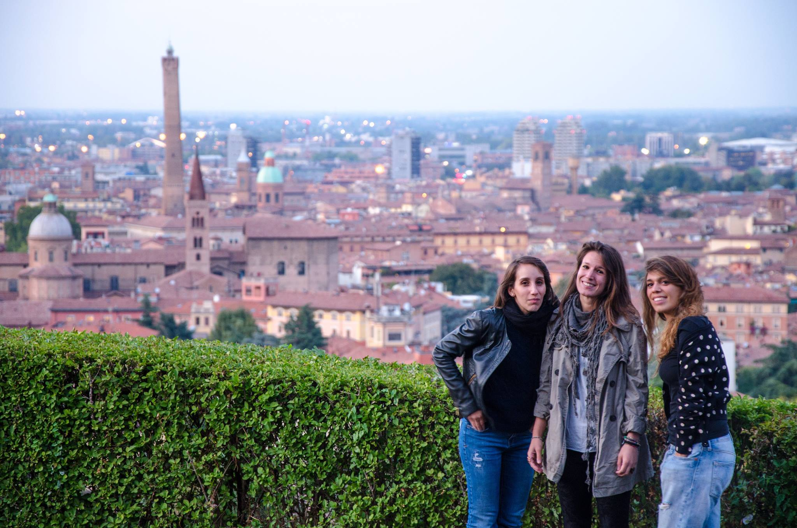

Chi siamo
L’inchiesta Le Altre Case di Bologna è stata realizzata in occasione della quinta edizione 2016 del Premio Roberto Morrione, da
Stefania Pianu, Sara Del Dot e Sara Stradiotti

La buona riuscita di questo progetto è stata possibile soprattutto grazie all’aiuto di alcune persone che hanno dimostrato da subito grandissima professionalità e prontezza nel fronteggiare le varie urgenze e situazioni particolari in cui ci siamo imbattute.
Nel dettaglio:
RIPRESE
Federico Ermini
Gabriele Pasca
Danilo Cariati
Marco Chiusole
MONTAGGIO
Federico Ermini
Gabriele Pasca
TITOLI VIDEO
Federico Ermini
ILLUSTRAZIONI E MOCKUP SITO
Debora Guidi
SITO WEB
Domenico Scotece
Riccardo Venanzi
MUSICA
Luca Pandolfo (Huli)
Marco Duse
Alberto Basso